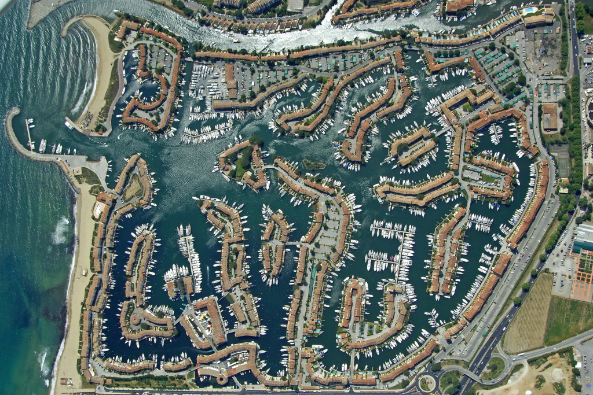
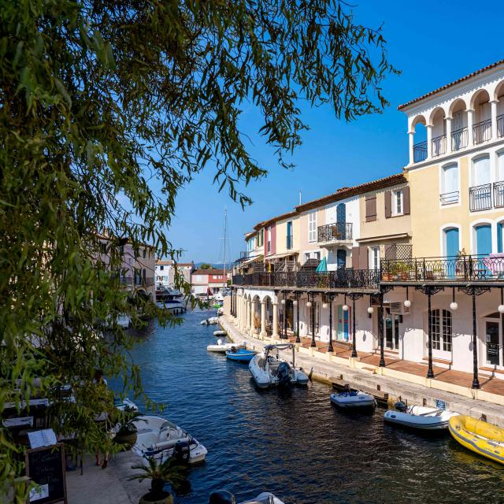
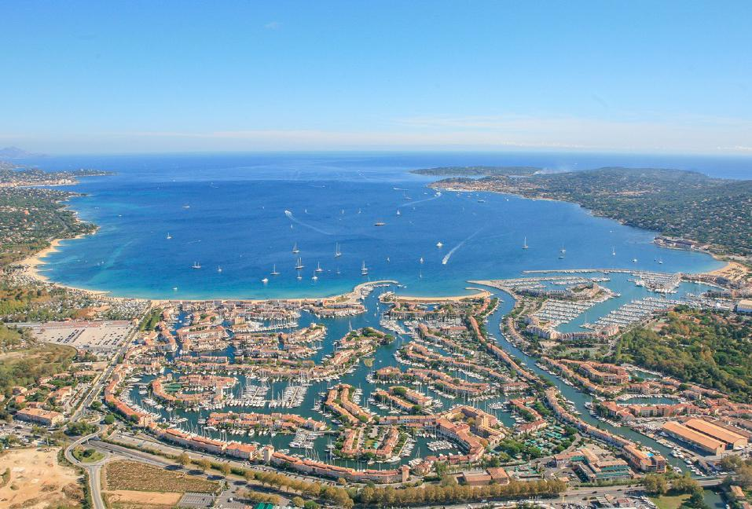

Situé au cœur de la cité lacustre de Port Grimaud, ce logement exceptionnel allie charme provençal et accès direct à la mer. Idéalement placé au 42 Rue de l'Éperon, il offre une vue imprenable sur les canaux, un cadre paisible, et un accès privilégié à toutes les commodités locales.
Caractéristiques principales :
- Superficie : Un espace lumineux et confortable, aménagé pour accueillir famille ou amis.
- Extérieur : Une belle terrasse avec vue sur le canal, parfaite pour vos repas en plein air ou moments de détente au bord de l’eau.
- Amarre privée : Profitez d’une amarre directement accessible depuis le logement, idéale pour les amateurs de navigation.
- Proximité : À quelques pas des plages, restaurants, et commerces, tout en restant dans un cadre calme et sécurisé.
Ce logement est une invitation à vivre l’art de la Dolce Vita, entre terre et mer. Que ce soit pour un séjour de vacances ou pour profiter toute l’année, il vous offre un cadre unique dans l’une des plus belles destinations de la Côte d’Azur.



